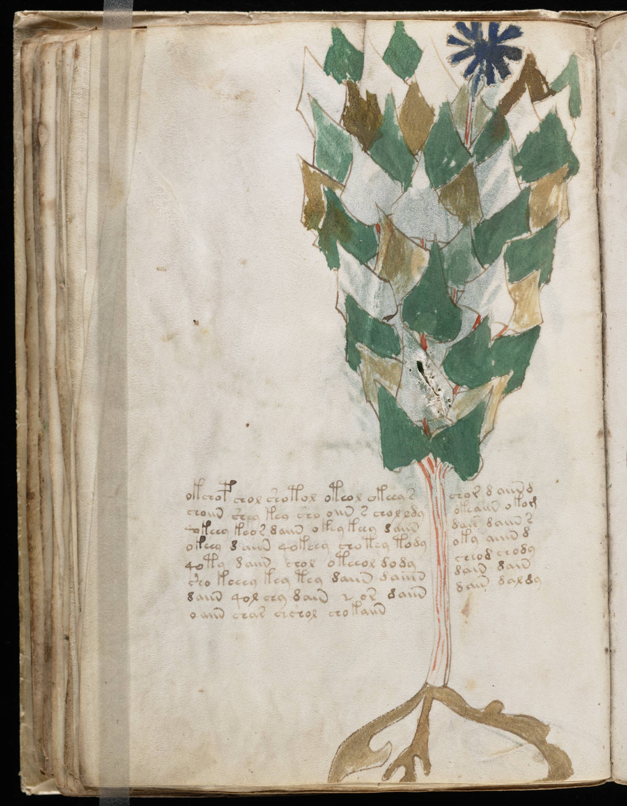

f38v
1okchop chol shotol oteol okeey schor d aiin d2choiin shey keo sho oiin s chol ldyokeaiin okom3qokeey keor daiin okey keey daiindair daiin s4okeey daiin qokeey chotey todyoky aiiin d5qoty daiin chol oteeol dodycheod chody6sho keeey key tey daiin daiiindain dain7daiin qol chy dain * or daiindais daldy8o aiin char chshol chokaiin
